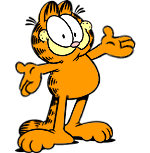
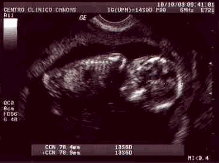
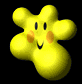

<html>
<head>
</head>
<body alink="#rrggbb" background="D:\site" bgcolor="#rrggbb" link="#bb" text="#gg" vlink="#rrbb"><meta http-equiv="Content-Type" content="text/html; charset=utf-8"><meta name="GENERATOR" content="Microsoft FrontPage Express 2.0"></body>
</html>
<title>Fabiano &amp; Simone = Baby</title>
<h1 align="center">Fabiano &amp; Simone</h1>

<h1 align="center">Baby</h1>

<p>Tudo come&ccedil;ou a uns nove anos atr&aacute;s, quando nossas vidas estavam de lados opostos, cada um com seu destino, agente se conhecia se falava mas mau sabiamos que iriamos ter um Baby um dia, e hoje rimos muito disto. Nosso baby esta com 8,5cm de comprimento e o cora&ccedil;&atilde;ozinho bate a mais de 158 btm, e bem grande para 14 semanas apenas, e esperto que nem o pai e sabido que nem a m&atilde;e, quando o m&eacute;dico tentou for&ccedil;a-lo a se virar para ver o sexo ele n&atilde;o se virou para o outro lado como se disse-se assim: n&atilde;o me incomoda dr que eu estou dormindo agora riiri...No inicio quando nos soubemos que iriamos ser papai e mam&atilde;e ela ficou um pouco apavorada, mas acho que isto e normal em todas as mulheres, j&aacute; eu n&atilde;o fiquei contente com a id&eacute;ia de ser pai penssava assim vai ser legal passar todo o meu conhecimento para meu filho ou filha , n&oacute;s j&aacute; escolhemos os nomes vai se chamar <font color="#ff0000">BRUNO </font><strong><font color="#008080">ou </font></strong><font color="#FF00FF">BRUNA</font>. Pretendemos no dia do nascimento fazer um parto ces&aacute;ria, a previs&atilde;o para o parto e para o final do m&ecirc;s de mar&ccedil;o ou inicio do m&ecirc;s de abril, estamos muito anciosos e felizes.</p>
<noframe> </noframe>

<p>........................................................................................................</p>

<p>&nbsp;</p>

<p>................O PAPAI <marquee behavior="SCROLL" width="30%"> (Fabiano)</marquee>............A MAM&Atilde;E<marquee behavior="SCROLL" width="30%">(Simone)</marquee>.........</p>

<p> O BABY[Bruno(a)]</p>

<p> </p>

<p>Com apenas 14 semanas ficou muito dificil de ver o sexo ( mesmo depois de for&ccedil;armos os medicos a nos mostrar o sexo eles disseram que somente poderiamos ver com mais de 16 semanas).Estamos esperando passar este tempo logo.</p>

<p>Ela sentiu dessejo de comer azeitonas noite passada mais ou mesnos 03:45 da manha .............................................</p>

<p>n&atilde;o tinha nada aberto esta hora da manha, mas eu acordei o dono do supermercado perto de casa</p>

<p>dizendo que era uma Emergencia e ele me vendeu um vidro de azeitona....</p>

<p>Depois disto ela come&ccedil;ou a sentir varios desejos</p>

<p>tipo assim:</p>

<p>-Sorvete de chocolate, baumilha,morango,flocos de neve,brigadeiro,uva,doce de leite</p>

<p>-Yogurte de morango, pessego, danoninho</p>

<p>-Chocolate branco, preto, meio amargo, com amendoim .</p>

<p>-Doce de leite (mumu)....</p>

<p>-Leite mo&ccedil;a..........</p>

<p>-etc.....</p>

<p>Achei meio estranho ter tantos desejos assim depois caiu a ficha e vi que n&atilde;o era o baby que estava com desejos e sim a m&atilde;e do baby ririir.</p>

<p align="center"><a href="index2.html"><font color="#FF0000">CLICKE AQUI</font></a></p>
